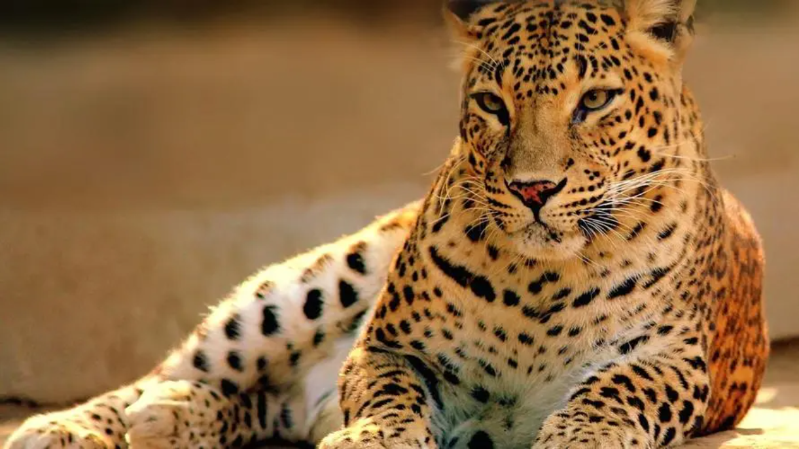

羚羊
羚羊是对一类偶蹄目牛科动物的统称，广义上包括了羚羊和小羚羊一类的动物。许多被称为羚羊的动物与人们印象中的相去甚远，对于分类学，羚羊并没有特定的专指哪个科或属。羚羊的特征是长有空心而结实的角，有区别于牛、羊这一类的反刍动物。

长颈鹿
长颈鹿通常生一对角，终生不会脱掉，皮肤上的花斑网纹则为一种天然的保护色。长颈鹿喜欢群居，一般十多头生活在一起，有时多到几十头一大群。长颈鹿是胆小善良的动物，每当遇到天敌时，立即逃跑。它能以每小时50公里的速度奔跑。当跑不掉时，它那铁锤似的巨蹄就是很有力的武器。长颈鹿身高腿长，四肢可前后左右全方位地踢打，击打范围广，力量大，最大可达600公斤，如果成年狮子不幸被踢中，可立马腿断腰折。

马鹿
马鹿别名赤鹿、八叉鹿、白臀鹿， 大型鹿类， 雄性有角，一般分为6叉，最多8个叉，茸角的第二叉紧靠于眉叉。夏毛短，通体呈赤褐色；冬毛灰棕色。马鹿川西亚种，背纹黑色，臀部有大面积的黄白色斑，几盖整个臀部，与马鹿其他亚种不同，故亦称“白臀鹿”。生活于高山森林或草原地区。喜欢群居。夏季多在夜间和清晨活动，冬季多在白天活动。善于奔跑和游泳。以各种草、树叶、嫩枝、树皮和果实等为食，喜欢舔食盐碱。

猎豹
猎豹是陆上奔跑最快的动物，全速奔驰的猎豹，时速可以超过110公里，相当于百米世界冠军的三倍快。它为什么跑这么快呢？与它的身体结构有关，一个是它的腿长，身体很瘦。再一个猎豹的脊椎骨十分柔软，容易弯曲，像一根大弹簧一样。就是它跑起来的时候，大家可以看，它前肢和后肢都在用力，而且身体也在奔跑中间一起一伏，所以跑得非常快。不过，耐力不佳，无法长时间追逐猎物，如果猎豹不能在短距离内捕捉到猎物，它就会放弃，等待下一次出击。